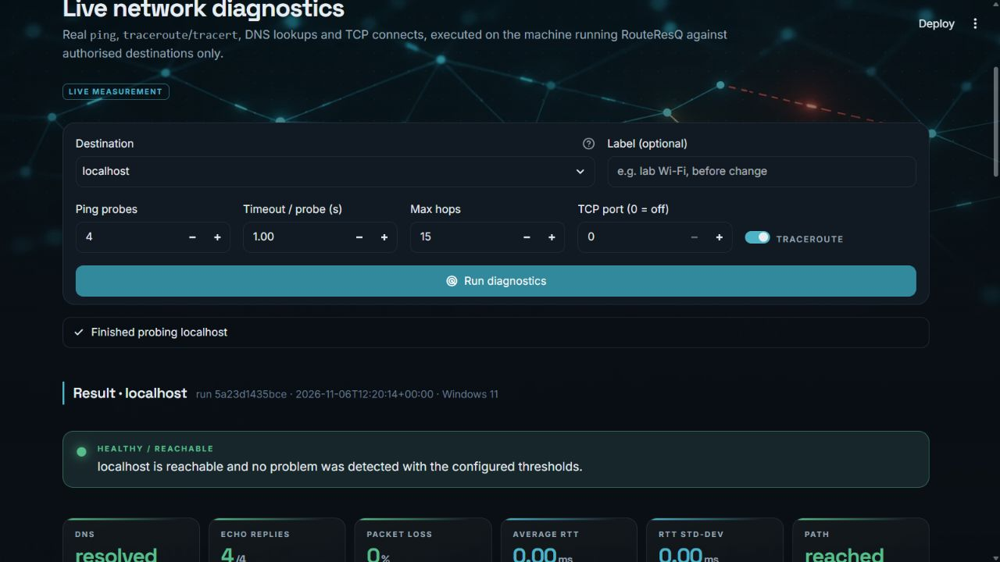
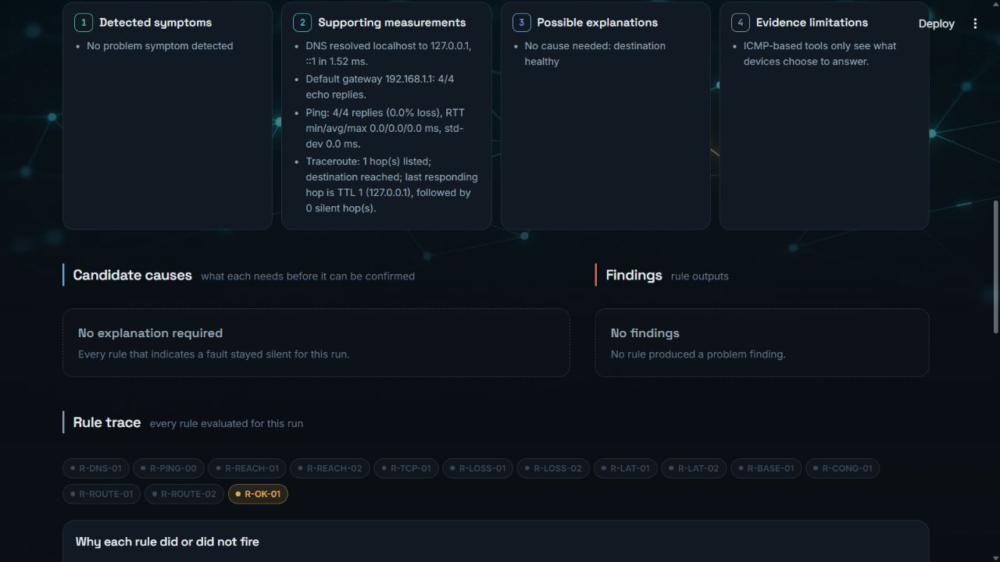
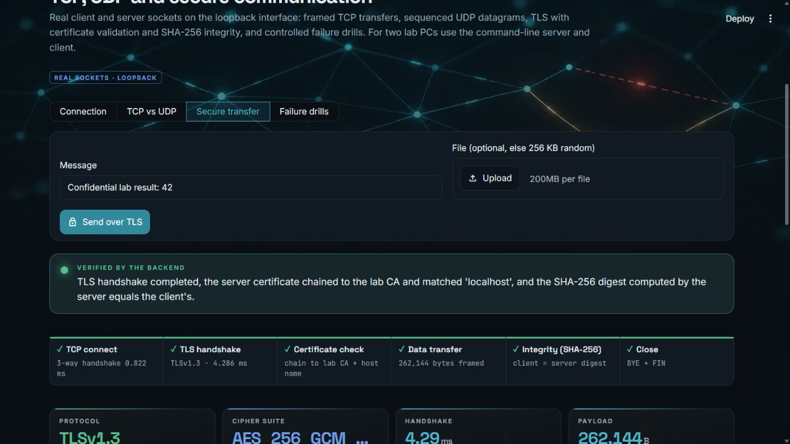

RouteResQ
Find out why a network failed, what it did to the traffic, and whether it recovered.
Mentors: Dr. Kirti Aggarwal · Dr. Kapil Madan · live at routeresq.streamlit.app
“The site is timing out.”
That one symptom has at least six different causes.
DNS failure
The name never resolves, so no packet is ever sent.
Host or path down
Echo requests vanish somewhere beyond the last router that answers.
Congestion
Queues fill, delay climbs, the router drops packets.
Link failure
Routing has to find another path, or traffic stops until the link returns.
Port closed / reset
The host is alive but the service refuses or drops the connection.
Bad certificate
TLS rejects an untrusted issuer or the wrong host name.
ping, tracert and nslookup only show symptoms. Routers ignore ICMP, and a working TCP connection can contradict a failed ping. People end up guessing.
Answer five questions for every failure, and only with evidence.
What failed?
DNS, gateway, ping, traceroute and TCP checks against authorised hosts.
Why, and how sure?
17 deterministic rules. Each cause gets a status, never a fake percentage.
What did it do to traffic?
Loss, delay, jitter, throughput and paths from real NS2 traces.
Did it recover?
Claimed only when the trace shows it: rerouted, restored or drained.
Can we prove it?
Root-cause register and reports, each linked to the raw evidence.
Live measurements, NS2 simulations and loopback sockets are labelled and kept apart. A simulated cause is never presented as the cause of a live problem.
The UI only presents stored evidence. All the logic is in testable Python modules.
Same backend from the command line, the test suite and the UI · deployed on Streamlit Community Cloud with Debian ns2


Real measurements in, 17 traced rules out
- DNS, gateway, ping, tracert and TCP connect. Allow-listed targets only, never through a shell.
- Evidence ladder: symptoms → measurements → explanations → limits
- The rule trace shows why each rule fired or didn't
- Contradictions stay visible, e.g. ping fails but TCP connects
- Congestion needs ≥ 2 independent indicators. One slow RTT isn't enough.
The root-cause register: one cause and one honest status per failure
We caused it in a controlled experiment, and the trace shows its effect.
Live: exactly one explanation fits all the evidence.
Live: several explanations fit. We list them plus the checks that would decide.
Nothing to explain.
| Subject | Status | Stated cause |
|---|---|---|
| nonexistent.invalid | Likely | Name doesn't exist in DNS. The gateway answered, so the LAN is fine. |
| 192.0.2.1 | Not confirmed | Host down, path beyond hop 2, or ICMP filtered. A TCP check would decide. |
| NS2 B1 / B2 | Confirmed | Link n1–n2 taken down at 3 s, back at 6 s |
| NS2 C | Confirmed | 2.5 Mb/s offered on a 2 Mb/s link |
| 6 transport drills | Confirmed | Refused, timeout, reset, UDP gaps, two TLS errors |
Same topology and traffic, one injected condition per scenario
Monitored flow: 1 Mb/s CBR/UDP, 1000-byte packets, n0 → n5, 1–9 s. All queues are DropTail with 20 packets.
Routing protocol choice decides whether a link failure is a blip or an outage
Failure to first delivery on n1→n3→n4. Only 2 packets lost; all 375 sent while the link was down arrived.
Delivery gap: n1 kept forwarding into the dead link, so 0 of 375 packets arrived until it came back.
Queue hit its 20-packet limit and delay rose to 102.75 ms during overload, then returned to baseline.


Recovery is claimed only when the trace shows it
B1: traffic moved to the backup path, and after-phase throughput was 101.9% of before.
B2: delivery resumes only after the trace logs the link coming back up.
C: the queue empties after the extra flow stops, and delay and loss return to baseline.
Timeline: configured fault → traced link-down → first drop → routing updates → first alternative delivery → link-up
TCP vs UDP, verified TLS, and six failures we break on purpose

TLS 1.3 · AES-256-GCM · chain to lab CA · host name checked · SHA-256 matches on both ends
| Injected fault | What we observe | Recovery check |
|---|---|---|
| No listener on port | Connection refused | Start server → ACK |
| Server never replies | Read timeout, 1.5 s | Responsive server |
| Reset mid-transfer | Connection reset at ~300 kB | Resend · digest matches |
| UDP seq 50–54, 120, 199 skipped | Exact gaps reported | 200/200 received |
| Untrusted CA | Certificate verify error | Lab-CA certificate |
| Wrong host name | Host-name mismatch | Valid localhost cert |
Tested, deployed, and upfront about its limits
Parsers, rules, NS2, sockets, UI
Configurable, fully traced
Docker locally, ns2 in the cloud
Each with a recovery check
Design & safety
- OOP: data classes, a CommandRunner protocol (fake runner in tests), custom exceptions
- Probes only to allow-listed, private or loopback targets
- No packet capture, no personal data, no custom crypto
Limits & next steps
- Live causes are at best Likely; ICMP-silent devices hide part of the path
- NS2's DV reacts faster than many real protocols
- Next: link-state routing, two-PC lab runs, trend analysis
Questions?
Saanvi Grover · Aditya Sharma · Prankit Goel · Aaradhya Shankar Kulashri